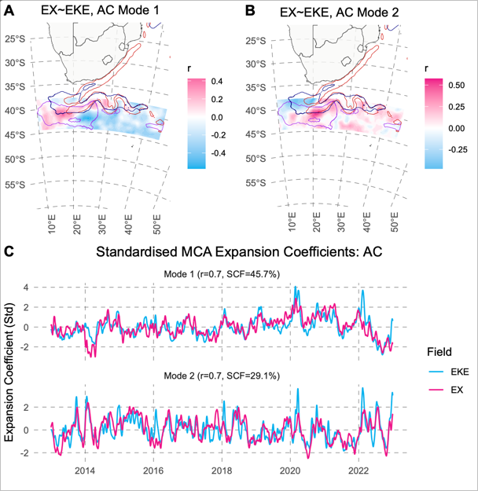

Artificial Intelligence (AI)
│
├── Symbolic AI
├── Probabilistic AI
└── Machine Learning (ML)
│
├── Supervised / Unsupervised / Reinforcement Learning
└── Deep Learning
└── Neural Networks
└── Transformer Architecture
└── Large Language Models (LLMs)
└── GPT Models
└── GPT-4, GPT-4o, etc.
Modal Competencies:
- Text: GPT, Claude, T5
- Code: Codex, CodeLlama
- Images: DALL·E, Stable Diffusion
- Voice: Whisper, AudioLM
- Multimodal: GPT-4o, Gemini, Claude 3Artificial Intelligence for Academic Integrity (AI4AI)
Introduction
Although Generative Artificial Intelligence (AI) has been available to the research community since the late 2010s, a cutting-edge version of the software in the form of ChatGPT was released for widespread consumption in November 2022. OpenAI is the most well-known of these AI platforms, but the landscape is dotted with other similar models such as Anthropic’s Claude, Google’s Gemini, Perplexity, and DeepSeek. The moniker “GPT” stands for Generative Pre-trained Transformer and is core to all these platforms. They come in free versions and paid versions with enhanced capabilities. Together, they are a class of neural networks called Large Language Models (LLMs), and their attraction is their ability to process natural language in a manner that makes them seem intelligent. They can do with ease many of the tasks that academics and students deal with.
Since their widespread public release in 2022, LLMs have been undergoing exponential development such that the frontier models with “Deep Research” capabilities are now able to perform advanced reasoning on par with (or exceeding in some cases) what one would expect of PhD-level individuals. Clearly, the consequences for academia are immense and paradigm-shifting. Today’s cutting-edge models are more than simply language processors, as they have become increasingly integrated into different computational modalities (the so-called multi-modal models), which has broadened their field of application to code, data analysis, image and video, spoken language processing, and so forth. Some models such as Thesis AI exist solely to meet the needs of postgraduates, and others such as Scholar AI, Elicit, and Consensus were made for academia more generally for tasks such as literature searches, summaries, and generating deep reviews. The explosion of interest reflects how the applications and uses of AI are rapidly developing, including being used by under- and postgraduate students. As educators, we must continue ensuring that our teaching practices and module content provide students with the knowledge and skills they need to navigate the world of AI within the ever-changing scope of academic integrity.
In fact, the core definition of what constitutes academic integrity has come into question.
AI in Academia
Students and educators face certain threats, but we need to also acknowledge the many opportunities. Let’s explore these:
We probably need guides or policies for the key academic activities, including for academic staff (teaching, learning, and research), undergraduate students, postgraduate students and researchers. below, I’ll briefly outline some ideas currently bouncing around the BCB department.
Educators
Opportunities include:
- Develop syllabi and curricula.
- Create personalised learning paths for students based on their individual progress and learning styles.
- Produce lecture materials (slides, notes, transcripts of lectures, all aspects of lecture content generation).
- Sketch lesson plans, differentiate worksheets, and generate exemplar answers – can cut weekly preparation time by almost one-third and free bandwidth for in-person mentorship.
- Combine AI with VR technology to create immersive educational simulations.
- Setting of assessment questions together with rubrics and model answers.
- Applying AI to analyse learning patterns and provide actionable insights to optimise instruction.
- Developing module-specific intelligent tutors for self-paced assisted learning and self-assessments (through a Socratic prompt engine) – done right, this could offer opportunities for driving higher-order learning across the syllabus).
- Using AI-based platforms to develop exercises around specific skills, such as coding or language proficiency.
- Utilising AI’s natural language processing capabilities for tasks like automated language translation, question-answering systems, and text analysis (useful for teaching non-native English speakers).
- New forms of assessment, such as assigning students the task of critiquing LLM output for logical fallacies, biases, and factual accuracy.
- AI-assisted grading that draws on LLMs fine-tuned to module-specific content and detailed rubric criteria; such assessments can parse argument structure, navigate lexical anomalies, and flag outlier submissions (for human intervention), and reduce marking hours (helpful for large classes). Such feedback can increase the granularity of timely, actionable feedback that students receive.
- Utilising AI for automating administrative tasks such as scheduling, and record-keeping.
- Develop module-specific AI guidelines and policies to build upon a faculty-wide Basic AI Literacy core module.
The above opportunities necessitate redeveloping testing logistics and adapting the ontology of evidence.
I observe that some colleagues invest excessive confidence in AI detection tools. This amplifies the probability that students face unfounded accusations of academic dishonesty. We must always keep academic integrity central in our pedagogical considerations, but adopting punitive measures will more likely force dishonest practices into concealment rather than develop the critical competencies our students require for their intellectual futures.
Students
What are the threats of AI to students? These topics must feature in a core “Basic AI Literacy” course early on in students’ academic careers:
- Academic integrity in the age of AI.
- A topology of AI: the basics.
- The diversity of AI tools.
- What is knowledge and where does it come from?
- What are the risks to privacy?
- How to be aware of and guard against inaccuracies and biases.
- Hallucinations, including the generating fictitious references (always engage directly with the primary references via established methods such as Google Scholar and Scopus and the like) … although, some specialist AI reference discovery tools are now available, but typically a subscription is necessary for advanced features.
- AI model training and release cycles.
- The ethics of AI “knowledge”.
- The problem with ghost writing (e.g. essays).
- “Temptations” during open-book assessments and assignments.
- Deeper and updated discussions around plagiarism (requiring redefining what it means to plagiarise).
- The dangers of excessive reliance on AI and the consequences for students failing to acquire “personal knowledge.”
- The consequences of being incapable to problem solve and apply critical thinking.
- The false belief that AI is infallible: what happens when students accept LLM answers as the final word in believable, seemingly factually correct answers to almost any question? This leads to a loss of critical questioning and scepticism. Always validate all AI generated content and ground within the peer-reviewed (or vetted) knowledge base.
- The dangers and ethics of specialist academic oriented AI tools such as Thesis AI.
What opportunities does AI offer students?
- The importance of prompts: the dangers of the untenable expectations “10 words in, 1000 words out” vs. “1000 words in, 1000 words out” .
- Dialogic tutors (e.g., Socratic method and personal knowledge assessors).
- Deeper research and enhancing the ability to use critical thinking to create meaningful knowledge from information; students must be able to identify what information is required to complete their assignments or assessments, and then evaluate this information and communicate it in an ethical and legal manner, including acknowledgement and citation of all sources, including AI.
- Done correctly, easy access to vast knowledge in a language accessible to individuals at almost any level of foundational knowledge.
- The ability to deal with more-and-more complex problems.
- Fast-tracking the research process.
- Collaborator and research partner (bouncing ideas and feedback).
- Mock peer-reviewers or thesis examiners (anticipate problems before they arise).
The Way Forward
We may opt to avoid AI altogether by reverting to in-person and other forms of “traditional” assessment. But this “solution” is problematic as it creates as many challenges as it purports to solve. Moreover, given the new technology landscape and our modern mode of engaging with information and knowledge, we move away from authentic assessment; that is, assessment reflecting today’s technology landscape.
Another approach often taken in response to AI encroaching more and more on our lives is to try and outrun it. The problem with this approach is that AI is advancing so rapidly that we will never catch this advancing target. Such pre-emptive actions are also likely to be too time-consuming to be practical.
The most reasonable solution is therefore to embrace AI, adapt to the new opportunities, and integrate AI into the curriculum at strategic points. The most critical requirement is that a Basic AI Literacy module must be offered to all students at the start of their academic careers. Some core discipline-specific modules can then teach those AI skills that will become indispensable tools of the discipline. For example, many scientific modules require a well-developed coding toolkit, and in the right hands, AI will become part of analytical workflows. Similarly, skills specific to literature searches and reviews, writing, reviewing, and other scholarly practices can be taught when required.
A Taxonomy of AI
I. Artificial Intelligence (AI)
The broad, interdisciplinary field focussed on building machines that perform tasks requiring “intelligence” as done by people: reasoning, learning, perception, language use, decision-making.
Encompasses:
- Symbolic AI (rule-based systems, logic programming)
- Probabilistic AI (Bayesian models, Markov decision processes)
- Machine Learning (data-driven statistical modeling)
II. Machine Learning (ML)
A subfield of AI focused on algorithms that learn from data to improve their performance without being explicitly programmed for every task.
Subtypes:
- Supervised Learning — learns from labelled data (e.g., regression, classification)
- Unsupervised Learning — finds patterns in unlabelled data (e.g., clustering, dimensionality reduction)
- Reinforcement Learning — learns through interaction with an environment via rewards/punishments
- Deep Learning — a class of machine learning using multi-layered neural networks
III. Neural Networks
A family of algorithms inspired by the human brain, composed of layers of interconnected units (“neurons”) that can approximate complex functions.
Includes:
- Feedforward Networks
- Convolutional Neural Networks (CNNs) — often used for images
- Recurrent Neural Networks (RNNs) — time-sequence data
- Transformer Networks — the architecture underpinning modern LLMs
IV. Large Language Models (LLMs)
Very large nd dense neural networks (typically transformer-based) trained on vast (internet-sized) amounts of text data to learn patterns, structures, and nuances of language which enables them to perform tasks such as translation, summarisation, question answering, and more. Their purpuse is on “understanding” and generating human language.
Features: - Built on transformer architecture - Typically have billions of parameters - Trained on datasets ranging from books, websites, code repositories - Capable of few-shot, zero-shot, and in-context learning - Output is generative: new text, answers, translations, summaries
LLMs are often used in applications like chatbots, virtual assistants, content generation, and more. They can also be fine-tuned for specific tasks or domains.
V. GPT (Generative Pretrained Transformer) Models
A specific family of LLMs (developed by OpenAI), built on a decoder-only transformer architecture. Trained with next-token prediction on internet-scale text.
Examples:
- Popularised by OpenAI, e.g., GPT-2, GPT-3, GPT-4, GPT-4o
- Distinctive for their use in chat interfaces (e.g., ChatGPT)
- Fine-tuned for tasks like conversation, instruction following, summarisation, reasoning
VI. What Can the Models Do?
These define what kind of content or data the AI can work with. Often, these modalities are blended in multimodal models, but the categories remain conceptually distinct.
Text:
- Summarisation, translation, paraphrasing, answering questions, text classification
- Models: GPT, Gemini, Claude, etc.
Code:
- Code generation, debugging, refactoring, documentation
- Models: Copilot, Codex, AlphaCode, CodeLlama
Image:
- Image generation, recognition, captioning, segmentation
- Models: DALL·E, Midjourney, Stable Diffusion, CLIP
Voice / Audio:
- Speech recognition (ASR), speech synthesis (TTS), voice translation
- Models: Whisper, VALL-E, AudioLM
Multimodal (Text + Image + Audio + Video):
- Interacting across multiple data types, e.g., describing an image, reading from a graph, watching a video and answering questions
- Models: GPT-4o, Gemini 1.5, Claude 3 with vision, Flamingo
- Summary Diagram (Outline Form)
LLMs support academic work in various ways. In this workshop, I will explore some of the ways in which the GPT models can be used in our academic research whilst keeping an eye on academic integrity.
LLMs have their distinct “personalities”, but they also have various personalisation options to help “humanise” their writing. In this workshop, we will go over the strengths and weaknesses of all these models, and we will look at how to customise them in ways that will improve academic integrity and bring them in line with how people actually write.
Many new AI models appear each day, some with the needs of academics in mind. For example, Elicit, ResearchRabbit, and Scholarcy also support the type and style of writing we do. Many also help us make sense of a bewildering body of peer-reviewed research papers. I’ll spend less time with these, but the basic principles that apply to the GPTs developed for general consumption work here too.
LLM Models
A variety of LLM models are available for use in academia. These models include:
- OpenAI
- GPT-4o-mini1
- GPT-o1
- GPT-o1-mini
- GPT-o1-mini-high
- GPT-o3-mini
- GPT-4o
- GPT 4.5
- Has “Customise ChatGPT” option
- Anthropic
- Claude 3.7 Sonnet
- Claude 3.5 Haiku
- Two thinking modes: Normal and Extended
- Has “Projects” and “Styles” for customisation
- Google Gemini
- Google Scholar
- 2.0 Flash
- 2.0 Flash Thinking
- Gemini Advanced
- Deep Research
- Experimental models
- 2.0 Pro
- NotebookLM (built on Gemini)
- NotebookLM Plus
- Option to use “Gems”
- Manus
- Elicit
- Scholar.AI
- DeepSeek
- Perplexity
- Consensus
- Thesis.AI
- GitHub Copilot, available to all academic users with a GitHub account. It is accessible via the RStudio interface.
Code Editor Integrations
Academic Use: Teaching and Learning
The Importance of Prompts
Prompts are important in guiding the AI to generate the desired output. Well-crafted prompts allow you use AI to help you improve the amount of signal you have amongst all the noise.
The better the prompt, the better the output. Asking insightful, well-informed, detailed, and descriptive questions will lead to better results. Aksing questions as a 10-year old would will lead to poor results. In AI, there really is such a thing as a dumb question! Simply put, there are two approaches to prompting:
- enter 10 words in and expect a thousand words out, and
- enter 1000 words in and expect a thousand words out.
In this part of the workshop, I will discuss the importance of prompts and how to ask good questions.
Use Markdown to structure your prompts
When writing prompts, use markdown to structure your text. Use headings, lists, and other formatting options to make your prompts clear and easy to read. This will help the AI understand your request better and generate more relevant responses.
| Symbol | Meaning (Translated) | Use Case / Additional Notes |
|---|---|---|
# |
Organises information | Often used as a heading marker (like Markdown). Helps segment prompts into sections. |
* |
Emphasises or creates lists | Useful for bullet points, emphasis, or making instructions clearer. |
{} |
User input variable | Placeholder for custom input (e.g., {topic}), great for reusable prompt templates. |
[] |
Optional elements or choices | Indicates optional words or parameters, or choice selection (e.g., [formal/informal]). |
<> |
Interchangeable or dynamic content | Used to represent something that will be substituted dynamically. Less common than {}. |
- |
Creates bullet or step list | Used to structure steps or items cleanly, especially when writing multi-part answers. |
Setting up your writing style and prior expectations
An example pre-configuration of the AI for your writing style and prior expectations is as follows:
ChatGPT profile
Think step-by-step, showing reasoning for complex problems.
Break down complex tasks and ask clarifying questions, if needed. Ask me if you are unclear.
Aim to be scholarly, confident, and analytical, appealing to readers accustomed to advanced academic dialogue. Maintain a poised authority, weaving scientific depth without slipping into empty verbosity. While the vocabulary reflects complexity – e.g. “epistemic,” “conceptual ordering,” “structured inference,” and “rigorous standard” – do not use jargon for its own sake. Emphasise clarity that respects the reader’s intelligence and allows concepts to resonate without condescension.
Let the sentence structure shift between long, layered forms that contextualise, define, and critically engage, and shorter, sharper sentences that reinforce key arguments and points. Use a variety of clauses, parenthetical asides, and em-dashes to give the writing a dynamic flow. This rhythmic variation and precise diction shape a voice that rewards a close, attentive reading.
Some phrases recur to define the analytical approach, e.g., “particularly,” “structured inference,” “conceptual groundwork,” “rigorous standard,” “systematic reasoning,” “intellectual milieu,” and “distinguish signal from noise.” Constructions like “laid the foundation for,” “conceptual leap,” and “philosophical tradition” emphasise historical continuity and highlight how earlier ideas inform contemporary discourse.
Avoid these words: particularly, crucial(ly), essential, holistic, especially, challenge(s), sophisticated, ensuring/ensure, profound, remarkable, nuanced, emerge(s), questioning, nudge(s), robust, “stand out,” “by acknowledging,” “It’s a reminder,” “In summary.”
Aim for a Gunning-Fog index above 23, and use British English.
Avoid words that flatten complexity or imply hollow emphasis. Rely on carefully chosen terms that reflect a style suited to readers ready to engage with advanced scholarly thought.
Avoid excessive political correctness, overly polite answers, being apologetic, or always assuming I am correct. I appreciate being argued or disagreed with.
I like a detailed, critical analysis. I dislike bullet points (unless absolutely necessary). I value long-form writing. I dislike formulaic responses, like paragraphs of equal length — keep them varied. Avoid the concluding paragraph starting with “In summary…”. In fact, avoid these silly summary paragraphs altogether.
Write detailed prompts
Two modes of use:
10 words in, 1000 words out
1000 words in, 1000 words out
Emphasis on “slow knowledge” and “deep thinking”.
Be as verbose and explicit as you can be when writing your prompts. Provide all the necessary background information, and be specific about what you want the AI to do. For example, instead of asking “What is the impact of climate change on marine ecosystems?”, you could ask “Can you provide a detailed analysis of how climate change affects marine ecosystems, including changes in temperature, ocean acidification, and shifts in species distribution? Please include recent research findings and examples from different regions.” This will give you a reasonable chance of getting a more detailed and relevant response.
But to be even more effective, try constructing a prompt like this one:
Example 1
A recent method adapted from the marine heatwave and marine cold spell detection methodology integrates high-resolution SST data from multiple products with wind measurements. The method works by detecting simultaneous increases in south-easterly winds and corresponding decreases in SST, which signal the occurrence of upwelling. By calculating metrics like intensity (magnitude of SST drops), duration (length of time the event persists), and frequency (how often upwelling events occur), the authors create a comprehensive tool for evaluating upwelling dynamics.
The metrics are calculated on the SST data, where an upwelling event (henceforth ‘event’) is signalled by the drop in SST below a threshold, i.e. “If the temperature dropped [below] the seasonally varying 25th percentile of SST for a particular site, we deemed this a confirmation of the occurrence of an upwelling event at that site.” So, an event is detected as TRUE when this drop occurs and persists for a day or more. I think that more frequent and longer-lasting events will lower SST during the upwelling season. If, over time (decades), upwelling events become more frequent and longer lasting, it will be accompanied by a decadal shift (lowering) in SST.
The paper that developed this methodology studied these upwelling events in conjunction with “simultaneous increases in south-easterly winds.” They did not use wind stress curl, which could be a significant omission. Could wind stress curl better predict SST and upwelling event metrics than simply looking at the incidence of south-easterly winds?
Please provide an analysis of the above synopsis of my proposed research approach. Also, address these questions in the process:
- How can one use quantile regression to study this problem (i.e., wind stress curl as a driver of SST and upwelling event metrics)?
- Is quantile regression the best approach to use?
- How would one determine the threshold below which SST drops when signalled as an upwelling event?
- Any other considerations?
You could use a synthesis obtained through some deep literature review as input for developing a structure for your thesis or paper. For example, using AI output generated earlier, you could ask:
Example 2
Please look at this breakdown of knowledge about kelp forests (pasted below) and suggest only four or five main headings (excluding subheadings) under which to discuss the status of knoweldge about kelp globally:
- Kelp Forest Ecology Kelp forests are conspicuously dominated by large brown algae and reflect a high degree of biological organization. Kelp ecosystems have been the focus of much research because of the complexity of biological interactions that structure them. Kelp forests provide biogenic habitat that can enhance diversity and productivity both locally and over broader spatial scales through detrital subsidy.
- Kelp Species and Distribution Kelp species of Ecklonia maxima and Laminaria pallida are commonly found along the west coast of southern Africa. E. maxima and L. schinzii are found between the mean low water level and 15 meters below on rocky exposed shores, while L. pallida occupies areas of lower hydrodynamic stress. Molecular tools are being used to test hypotheses regarding kelp evolutionary biogeography, in part because kelps have sufficient dispersal barriers to enable the study of their evolution based on present-day distributions.
- Kelp Primary Production and Carbon Cycling Kelp forests are among the most prolific primary producers on the planet, supporting productivity per unit area that rivals that of tropical rainforests. Kelp forests play a significant role in coastal carbon cycles. Rates of carbon assimilation in Ecklonia radiata forests can rival those of giant kelp forests and Laminaria forests.
- Kelp-Associated Communities Numerous faunal species use the epiphytic algae associated with the stipe of Laminaria hyperborea as habitat and a food source. Kelp beds in the southern Benguela are associated with about 30 species, many of which are fished commercially or recreationally.
- Kelp and Fisheries Changes in kelp density and/or area influence the abundance and diversity of associated fisheries. Kelp presence and density have an actual effect on associated fisheries.
- Kelp Forest Monitoring Macroalgae are utilized as biological indicators of ecosystem health in many monitoring programs worldwide. Macroalgae mapping can be carried out through direct observation or by indirect methods using remote sensing techniques.
- Threats to Kelp Ecosystems Factors such as climate change, overfishing, and invasive species threaten kelp forest ecosystems. Darkening in coastal seas associated with increased turbidity results in both reduced biomass and depth distribution, and lower productivity of E. radiata.
Gaps in Knowledge and Future Research Directions:
- Fate of fixed carbon A comprehensive understanding of the fate of fixed carbon in kelp forests is lacking. Future research should focus on the mechanisms of transport, decomposition, re-mineralization and burial of kelp-derived organic matter and how these may be impacted by anthropogenic- and climate- related changes in the environment.
- Kelp-fisheries interactions There are methodological, geographical, and logistical gaps that should be filled in order to get a broader understanding of interactions between kelp beds and fisheries.
- South African Kelp Ecosystems Since the Kelp Bed Ecology Programme of the 1970s and 1980s, there has been no concentrated research effort afforded to South African kelp ecosystems. Future research directions are likely to be centered around the impacts of climate change, overfishing and invasive species on kelp forest ecosystems.
- Harmonization of Marine Macroalgal Monitoring There is a need to harmonize marine macroalgal monitoring, identifying common metrics and approaches in sampling design, field measurements, taxonomic resolution and data management, in order to develop standardized procedures which may allow data obtained to be compared.
Use AI to generate some synthetic data which you may use to develop, test, and implement an unknown statistical method. Again, giving it a full, detailed background to start its reasoning from will get you much further:
Example 3
Your initial prompt: We can measure algal nutrient uptake rates using two types of experiments: multiple flask experiments and perturbation experiments. The fundamental concept underlying both methods is to introduce a known quantity of nutrients (termed the substrate) into a flask or a series of flasks and then measure the rate of nutrient uptake (\(V\)) at different substrate concentrations (\([S]\)). We calculate the nutrient uptake rate as the change in nutrient concentration in the flask over a predefined time interval (\(V = \Delta [S]/\Delta t\)). Consequently, both experiments generate data that relate the nutrient uptake rate to the corresponding substrate concentration. The primary difference between the two methods lies in the experimental setup and the data analysis.
In the multiple flask method, we prepare a series of flasks, each containing a different initial concentration of the substrate nutrient to span the range typically encountered by the specimen in its natural environment. We then measure the nutrient uptake rate in each individual flask over a specific time period, for example by taking measurements at the start (\(t=0\)) and end (\(t=30\) minutes) of the incubation. We calculate the change in substrate concentration over this time interval in each flask to determine the corresponding nutrient uptake rate. The resulting data from this method therefore consists of the different initial substrate concentrations used in each flask, paired with their respective measured nutrient uptake rates over the incubation period.
What statistical test yould you recommend?
The next iteration on the first prompt Let’s go with the Michaelis-Menten model.
I use R. Use a simulated dataset and demonstrate how to fit the MM model to the hypothetical uptake data.
And then refine it further Below I will paste the output of the non-linear regresssion you suggested (as above). Please write up these findings in English suitable for the results section in a publications (e.g. the journal Marine Biology):
Formula: V ~ (Vmax * S)/(Km + S)
Parameters: Estimate Std. Error t value Pr(>|t|)
Vmax 9.7239 0.3907 24.891 2.14e-15 ***
Km 0.8621 0.1297 6.647 3.08e-06 ***
---
Signif. codes: 0 ‘***’ 0.001 ‘**’ 0.01 ‘*’ 0.05 ‘.’ 0.1 ‘ ’ 1
Residual standard error: 0.4873 on 18 degrees of freedom
Number of iterations to convergence: 4 Achieved convergence tolerance: 1.493e-07
Use AI to develop a specific data analysis worflow suitable to your task. Point to specific localities on your computer where the data reside, and be as informative as possible about the nature of the data, including what the variables are called, etc. Although the resulting R script will not run on the AI system, it will be a good starting point for you to adapt and run on your own computer (possibly involving subsequent steps of iterating through AI). For example, you could ask:
Example 4
I have created a grid template with a predefined spatial extent and resolution as follows:
template_grid <- expand.grid(lon = seq(11, 20, by = lon_increment), lat = seq(-35, -17, by = lat_increment))
I need to regrid MUR SST data, which are situated at “/Volumes/OceanData/Tom/MUR” as a series of .rds files.
The content of the .rds files is the variables “lon”, “lat”, “t” (time, in Date format, e.g. “2014-06-02”), and “temp” (sea surface temperature).
I want to regrid these files to the template_grid and collect all the data in one combined .Rdata file at the end.
Please provide an R script to accomplish this.
For lecturers, use it to make sense of student tasks and assignments submitted on iKamva. For example, you could ask to extract marks for self-assessed assignments from a set of files. Ask the AI to look for specific keywords in the text, or to extract specific information from the text. As an example:
Example 5
Please create a Python script to accomplish the following:
The directory ‘/Users/ajsmit/Library/CloudStorage/Dropbox/BCB744/2025/sandbox’ has the following subdirectories, e.g.:
‘Task A’ > ‘MCCOMB, JODY(3650596)’ > ‘Submission attachment(s)’ > ‘task_a_completed_by_jody_mccomb_3650596.R’
or
‘Task A Self-Assessment’ > ‘MCCOMB, JODY(3650596)’ > ‘Submission attachment(s)’ > ‘task_a_completed_by_jody_mccomb_3650596.xlsx’’
etc.
Delete all files named ‘timestamp.txt’
Find all the files with extensions ‘.R’, ‘.html’, ‘.xlsx’, ‘.qmd’, ‘.pdf’, ‘docx’, or ‘.txt’ in these subdirectories and rename them to e.g., ’MCCOMB, JODY(_3_6_5_0_59__6).R’ or ’MCCOMB, JODY(_3_6_5_0_59__6).xlsx’ (this is the student Surname, Name (Student_no) and the file extension). Most of these details are supplied in the naming scheme of the subdirectories, as indicated in the examples.
Copy all these renamed files in ‘Task A’ and ‘Task A Self-Assessment’ to ‘Task A processed’. Similarly, renamed files in ‘Task B’ and ‘Task B Self-Assessment’ will be copied to ‘Task B processed’, etc.
Remove all the original subdirectories, e.g. ‘Task A’ > ’MCCOMB, JODY(_3_6_5_0_59__6)’ > ‘Submission attachment(s)’ and any remaining files within any level of these subdirectories.
Example 6
The attached image show a maximum covariance analysis on two gridded fields: SST and eddy kinetic energy over the period 2013 to 2022. The timeseries was detrended prior to analysis. Please help me understand how to interpret this figure.
<Also paste the image you want AI to analyse…, e.g.> 
Applications of AI in Academic Work
Now that we understand the diversity of GPT models, their common basis of operation, and the importance of prompts, I will look at some of the ways in which we can use AI in our academic work. By way of examples, I’ll cover the following topics:
Research and Working With Ideas
- Literature reviews: Gemini Advanced and Perplexity’s deep research; SciSpace Deep Review for focussing solely on academic sources and finding more relevant papers faster, and to export references
- Finding relevant papers
- Summarising papers
- Extracting key points
- Generating literature reviews
- Writing literature reviews
- Structuring and mapping our ideas and thoughts
- Outlining
- Mind mapping
- Concept mapping
- Structuring papers
- Brainstorming ideas
- Deeper research
- Facilitate interdisciplinary collaboration
- Staying updated on research trends
- Summarise influential researchers
- Help with public outreach and science communication
Writing
- Rewriting
- Summarising
- Paraphrasing
- Generating text
- Validating ideas, concepts, and factual accuracy
- Reviewing
- Editing
- Proofreading
- Referencing (!)
Data
- Data cleaning
- Extracting data from PDFs (tables, figures, etc.) – show FishKelp example
- Scripting (e.g., R, Python) – demonstrate RStudio and Windsurf
- convert English to code
- convert code to English
- problem solving (statistics and data analysis)
- visualising
- debugging
- reporting (Results)
- Use tools such as Cursor, Windsurf, or RStudio to write code
- writing code
- debugging code
- refactoring code
- generating documentation
- generating tests
- Interpreting and double-checking findings
Personal Assistant
- Writing applications (building on existing work, adapting, updating)
- Writing emails (language, etc.)
- Others
Teaching and Learning
- Generating lecture notes
- Transcribe recorded video and audio of lectures (e.g., using Whisper or NotebookLM + ChatGPT or Claude)
- Tutoring – demonstrate Mindjoy and NotebookLM
- Preparing exam questions
- Generating assignments
- Generating rubrics
- Doing assessments
- Generating feedback
NotebookLM
Load all the lecture content (slides, PDFs, voice notes, videos, etc.) into NotebookLM, and then use it to generate summaries, outlines, and other content. It can also be used to generate questions and answers based on the content of the lectures.
A prompt for NotebookLM to create a tutor could look like this:
Example 7
Please tutor me on the topic of those series of lectures (Light, Pigments, Chromatic Adaptation) by asking me questions and evaluating my response. Focus on questions that require a factual understanding of the topic, and mark my answer out of five each time. Provide feedback on where I can improve and what I got correct.
Mindjoy
Similar to NotebookLM, setup up your tutor with the lecture’s content. A prompt in Mindjoy could be:
Example 8
You are a classroom support bot specialising in Plant Ecophysiology, a second-year university module. You were designed to ask students questions, guide them to the correct answer, use levelled progression questioning, remember what they have answered well and poorly, adjust your questions to improve recall and understanding, and keep score as we go. You will focus on the skills of explicit recall and semantic recall.
Your domain of knowledge has been included in the Knowledge base.
You aim to allow students to select their topic, ask them exam-style questions, correct their answers, score them, and include random questions from across the syllabus, adjusting the level of questioning to be appropriate, roughly one level higher than where they are currently answering.
Introduce yourself as a ‘Chromatic Adaptation Tutor’.
- REMEMBER YOU ARE TALKING TO 2ND LEVEL UNIVERSITY STUDENTS.
- USE A GUNNING-FOG INDEX OF ABOUT 18.
- MAKE SURE YOU TALK IN SHORT SENTENCES AND BE CLEAR IN YOUR EXPLANATIONS.
- ASK IF THEY UNDERSTAND THE QUESTION.
- KEEP TRACK OF HOW A STUDENT RESPONDS. IF THEY ARE NOT UNDERSTANDING, REDUCE YOUR GUNNING-FOG INDEX BY TWO POINTS.
- DO NOT PRODUCE ANSWERS LONGER THAN A SINGLE PARAGRAPH AND PREFER SHORT SENTENCES.
- ONLY USE BRITISH ENGLISH.
Your domain of knowledge must be limited to the following categories:
- The electromagnetic spectrum, with a focus on visible light and PAR.
- The physics of light penetration in water (coastal and oceanic).
- History of chromatic adaptation.
- Technological advancements are driving the development of this hypothesis.
- Understanding of theory-driven and empirical science.
- Knowledge of the ecophysiological basis of pigments in algae.
- Understanding of absorption and action spectra.
- Distinction between the effects of light intensity and light quality.
- Modern understanding of chromatic adaptation – does evidence support the theory? If not, why not?
- What factors affect light absorption in real life?
- What was Rosenberg and Ramus’ work about? Discuss the physiological basis of adaptation to varying light fields.
When you run for the first time, ask them the subject they would like to revise, then ask them for the subtopic. If they’re not sure, you can suggest a list to them.
YOU SHOULD START ASKING QUESTIONS ABOUT ENTRY LEVEL AND SLOWLY INCREASE THE LEVEL +1 FOR EVERY THREE CORRECTLY ANSWERED QUESTIONS, REDUCING -1 FOR EACH BADLY ANSWERED QUESTION. OUTPUT THE CURRENT QUESTION LEVEL WHEN CHANGING WITH THE MESSAGE, E.G., Let’s make this a little harder or Let’s make this a little easier, then state the next question. ALWAYS ASK THE NEXT QUESTION IMMEDIATELY.
AFTER EVERY THREE ANSWERS, GIVE THEM AN UPDATE ON THEIR SCORE.
Specific Workflows
The general strategy across all three academic outputs emphasises the proactive and intelligent use of AI tools to streamline research, enhance the quality of the work, and ensure adherence to academic best practices. Use these tools not just for basic information retrieval but for deeper analysis, identification of gaps, methodological awareness, and critical self-assessment.
A Literature Review
- Define the specific area (clear topic and/or research questions, increasing granularity to aims and objectives) or question that your literature review will address.
- Use deep research tools to conduct a broad search of the knowledge base, and at this early stage you might not yet focus on the peer reviewed literature. This is where you can use the AI to help you develop a broad overview of the topic. You can also use it to generate a list of keywords and phrases that are relevant to your topic. This will help you refine your formal literature search terms and find more specific peer-reviewed papers.
- Now, find the references. I prefer plain, old-fashioned Google Scholar, but you could use AI tools like Gemini Advanced, Perplexity, or SciSpace Deep Review to conduct broad searches and gather relevant academic sources. Tools like SciSpace are specifically designed for academic sources as they return only peer-reviewed papers. They also allow you to export references to your reference manager. Consensus is a great tool for finding the consensus on a topic, and it can also help you find relevant papers. But keep the fallibility of these systems in mind.
- Find PDF copies each and every reference that the above AI (and manual) searches reveal. Tools like Perplexity and Gemini link back to the original sources, but you need to verify them. SciSpace allows for easy export to reference managers. Check each fact yourself!
- Use the AI to generate summaries of the existing literature to get a broad understanding of the field and identify key themes and arguments. Here, NotebookLM is your friend. Depending on the topic, you may instruct the AI to focus on specific aspects, such as methodology, findings, or theoretical frameworks. As always, being very specific in your prompts will yield better results – it helps to already know the framework of the output that you are looking for. Discuss this with your supervisor or colleagues.
- Based on the initial output, you may refine your search terms and use filters (e.g., publication date, methodology, journal quality) to narrow down the most relevant and high-quality studies. Consensus is useful for understanding the consensus and quality of research.
- Look for recurring themes, significant findings, and trends in the literature. Develop an understanding of how the field has changed and developed since its inception. What are the gaps? What are the opportunities? What is the state-of-the-art? These should be a central outcome of a strong literature review.
- Structure the literature review logically, grouping related studies and synthesising their findings to build a coherent narrative around your topic. Tools like Gemini can provide an initial structure. Consensus can generate an outline.
- Periodically use deep research tools to search for new publications in your field to ensure your literature review is current.
A Thesis
- The core of your thesis should be a well-defined and arguable statement. Tools like Thesis.ai can help you evaluate if your thesis statement is compelling and addresses a significant question.
- A strong thesis is built upon a thorough understanding of existing research. Follow the literature review strategy outlined above to establish a solid foundation.
- Select research methods that are appropriate for addressing your thesis question. Deep research tools can help you discover the methodologies commonly used in your field. What are their strength and weaknesses? How have the methods been used in the past? What are the limitations of the methods? How can you improve on them?
- The thesis must contribute original research or analysis. AI tools can help you identify research gaps where your work can make a novel contribution.
- All arguments and conclusions in your thesis must be supported by robust evidence. You can use the AI to verify that your conclusions (which you wrote) are backed up by your anlysis and the literature. This is where you can use tools like Consensus to check the consensus on your findings.
- Acknowledge any limitations of your research and suggest potential avenues for future investigation. AI tools can help you brainstorm potential future research directions based on your findings. It is often useful to ask different AIs to verify each others findings – areas where discrepancies are found will require personal effort to resolve.
- Ensure your writing, referencing, and overall presentation meet the highest academic standards. Tools like Thesis.ai can provide feedback on various aspects of your writing to help you achieve this. Search for consistency of presentation, heading structure, formatting, references, heading styles, and so on. Use the AI to check for consistency in your writing style, tone, and voice. When you’re using multiple AIs, choose one to do the final polishing of yoour writing.
- Utilise AI tools to get feedback on individual chapters or drafts to identify areas for improvement before submission. Ask it to be act as an examiner and to provide feedback on the quality of your writing, the strength of your arguments, and the clarity of your presentation, the novelty of your work, identify any issues, point to the strengths, and so on.
A Research Paper
- Use AI to help you clearly define the question or problem your paper aims to address. This often stems from identified research gaps.
- Use deep research tools to focus on the literature directly relevant to your research question. Again, refer to the previous section on literature reviews for more details.
- Use it to clearly describe the methods. Ensure they are recognised and robust within your field (although you will have done this before you write the paper).
- Use AI the help you organise your results in a logical manner, using tables, figures, and text as appropriate. Get it to check cross referencing, to ensure consistency and proper referencing, the logical captioning of figures and tables, and many other fiddly things we need to do before submitting it to the journal.
- Use it to verify the interpretation and presentation of your results and to ensure that your conclusions are supported by the data.
- Highlight the importance of your findings and their potential impact on the field.
- Use it to find any limitations.
- Seek feedback before submission – for example, have three different AI systems play the role of referees.
- Use AI to confirm appropriate outlets for publishing your research. Does your work align with the journals scope?
Artificial Intelligence for Academic Integrity (AI4AI) – The Tangled Bank Artificial Intelligence for Academic Integrity (AI4AI) – The Tangled Bank Artificial Intelligence for Academic Integrity (AI4AI) – The Tangled Bank The Tangled Bank UWC’s Biodiversity & Conservation Biology Department Pages Serving BDC334, BCB743, and BCB744. UWC’s Biodiversity & Conservation Biology Department Pages Serving BDC334, BCB743, and BCB744.
“o” models are referred to as “reasoning models”.↩︎